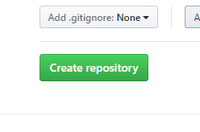
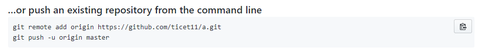
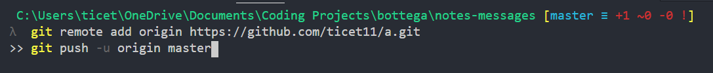

Modern JavaScript
What is lodash?
Lodash is a JavaScript library that offers certain utility functions that are commonly needed in programming.
What is the JavaScript debugger?
The debugger is a tool that allows you to start and pause a JavaScript function between each step. It also makes clear the value of certain variables that are present in the function.
How do you create a custom error class in JavaScript?
class VeryCoolError extends Error {
constructor(errorMessage) {
super(errorMessage);
this.name = 'VeryCoolError';
}
}
What is npm?
npm is a software registry. Users can post sections of code that other users can download and install within their own system or program.
What is node?
Node.js is a JavaScript environment, in which you can run JavaScript, outside of a browser.
Guide to Git
How do you create a local repository?
Within the terminal, navigate to the root folder you wish to initialize and use the following command:
$ git init
What is github?
GitHub is a git repository hosting service. If your system crashes, you'll have a backup on GitHub. It also makes it much easier to have several people working on the same project by allowing access to the repository to other users.
How would you push a git repo to github?
You will have initialized a local repository
before attempting this:
1. Select 'New repository' from the '+' dropdown
menu in the top right corner.

2. Name your repository. (Naming it the same as
the root folder can be a good organizational
decision)

3. Click the 'Create repository' button.

4. Copy text from this box.

5. Paste into your terminal and execute.

What are the steps to make a git commit?
$ git add .
Collects all files that have been changed.
$ git commit -m "Put commit message in these quotes."
Adds a message to all of your files that were updated since last commit.
How would you hide files from git?
Create a file called '.gitignore'. Within that file, type the names of all folders and files you wish to be ignored when you make commits.
Why would you want to hide files from git?
Sometimes the files in your program contain sensitive information or information that is specific to your system, so you don't want them to be made public in the repository.
What does git pull do?
Git pull retrieves the most current repository from your source and merges it to your currently selected branch.
What is the purpose of git branches?
Creating a new branch allows you to edit files and save it's data while preserving the master branch, so you won't lose working versions of the app while working on different features.
How would you push a git branch to github?
As long as you're located in the branch on your system, when you push as normal you will be pushing up your branch so that it can be seperatly accessed.
Explain how to merge a remote branch.
Merge a remote branch with what?
What is git rebase?
A git rebase would be used in a situation where someone created a feature branch. After that branch was created, the master branch received another commit. With a rebase you can bring your feature branch up to date with the master branch while still keeping it seperate.
What is git stash?
With git stash, you can checkout of a branch without commiting in a way that will not bring all the new data onto a branch it doesn't belong on.
What is the difference between git fetch and git pull?
Git pull automatically merges the retrived version
with your currently active local branch.
Git fetch retrieves the remote version without
merging the two versions.
What is a merge conflict?
A merge conflict occurs when you try to merge 2 branches when both had the same block of code edited in different ways.
How can a merge conflict occur?
If 2 collaborators were both working on the same code or if someone was working on the master branch instead of a seperate feature branch, etc. It could really happen in a lot of situations where people aren't careful.
JavaScript in the Browser
What is the DOM?
Document Object Model. Basically a structured representation of nodes and elements created by the browser.
How would you add a css class with Vanilla JavaScript?
item.classList.add('newClass');
How would you remove a css class with Vanilla JavaScript?
item.classList.remove('oldClass');
Explain the differences between the window and the document for JavaScript development.
The document is loaded within the window object. The object includes the actual documents being loaded into the window.
What are query selectors?
Query secectors allow you to search through your document with several different properties as parameters.
What are JavaScript event listeners?
Event listeners allow you to select a trigger that will start different functions, such as if something is clicked on or is hovered over.
What is onclick and what can we use it for?
'onclick' tells the HTML to start a JavaScript function when the item is clicked.
What is the difference between onclick and addEventListener?
'onclick' is an inline HTML attribute. 'addEventListener' is fully contained in the JavaScript file.
How can you add and remove css styles in vanilla JavaScript?
Remove a style:
item.style.removeProperty('property');
// or
item.style.setProperty('property', "initial")
Add a style:
item.style.setProperty('property', 'newValue');
What is the JavaScript toggle function?
The toggle function allows you to use an event listener that will add a class and then remove a class if the event listener is triggered twice. It could be implemented like this:
itemClicked.addEventListener('click', () => {
itemToBeSeen.classList.toggle('classToToggle');
});